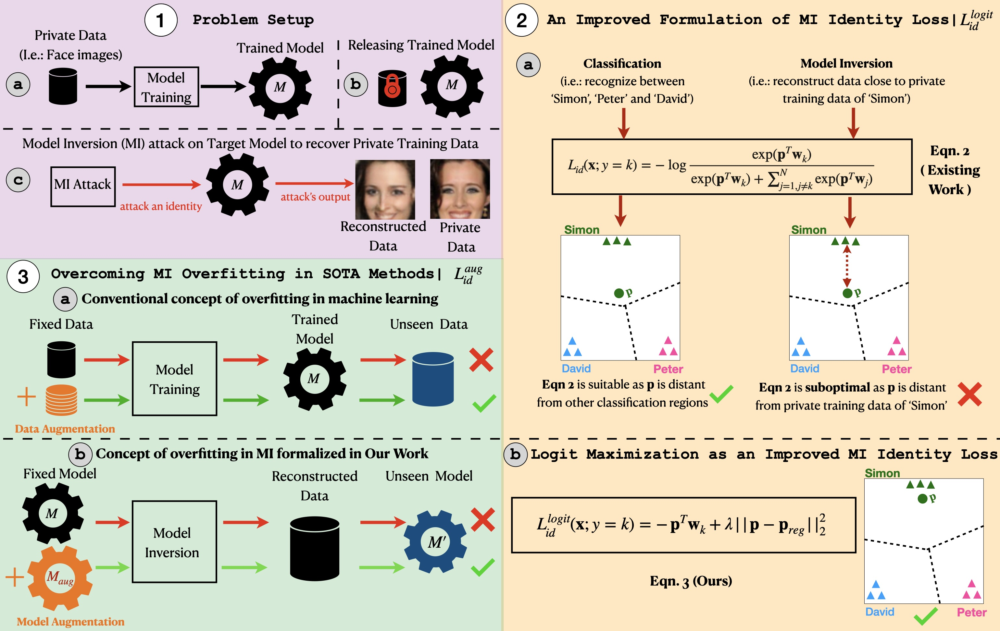

Ngoc-Bao Nguyen(*) |
Sy-Tuyen Ho |
Koh Jun Hao |
Ngai-Man Cheung
Singapore University of Technology and Design (SUTD)
CVPR 2026
Model inversion (MI) attacks pose significant privacy risks by reconstructing private training data from trained neural networks. While prior studies have primarily examined unimodal deep networks, the vulnerability of vision-language models (VLMs) remains largely unexplored. \textbf{In this work, we present the first systematic study of MI attacks on VLMs to understand their susceptibility to leaking private visual training data.} Our work makes two main contributions. First, tailored to the token-generative nature of VLMs, we introduce a suite of token-based and sequence-based model inversion strategies, providing a comprehensive analysis of VLMs' vulnerability under different attack formulations. Second, based on the observation that tokens vary in their visual grounding, and hence their gradients differ in informativeness for image reconstruction, we propose Sequence-based Model Inversion with Adaptive Token Weighting (SMI-AW) as a novel MI for VLMs. SMI-AW dynamically reweights each token's loss gradient according to its visual grounding, enabling the optimization to focus on visually informative tokens and more effectively guide the reconstruction of private images. Through extensive experiments and human evaluations on a range of state-of-the-art VLMs across multiple datasets, we show that VLMs are susceptible to training data leakage. Human evaluation of the reconstructed images yields an attack accuracy of 61.21\%, underscoring the severity of these privacy risks. Notably, we demonstrate that publicly released VLMs are vulnerable to such attacks. Our study highlights the urgent need for privacy safeguards as VLMs become increasingly deployed in sensitive domains such as healthcare and finance.

@inproceedings{
nguyen2026MIVLM,
title={Do Vision-Language Models Leak What They Learn? Adaptive Token-Weighted Model Inversion Attacks},
author={Ngoc-Bao Nguyen and Sy-Tuyen Ho and Koh Jun Hao and Ngai-Man Cheung},
booktitle={CVPR},
year={2026}
}
This research is supported by the National Research Foundation, Singapore under its AI Singapore Programmes (AISG Award No.: AISG2-TC-2022-007); The Agency for Science, Technology and Research (A*STAR) under its MTC Programmatic Funds (Grant No. M23L7b0021). This research is supported by the National Research Foundation, Singapore and Infocomm Media Development Authority under its Trust Tech Funding Initiative. Any opinions, findings and conclusions or recommendations expressed in this material are those of the author(s) and do not reflect the views of National Research Foundation, Singapore and Infocomm Media Development Authority. The work is sponsored by the SUTD Decentralised Gap Funding Grant.